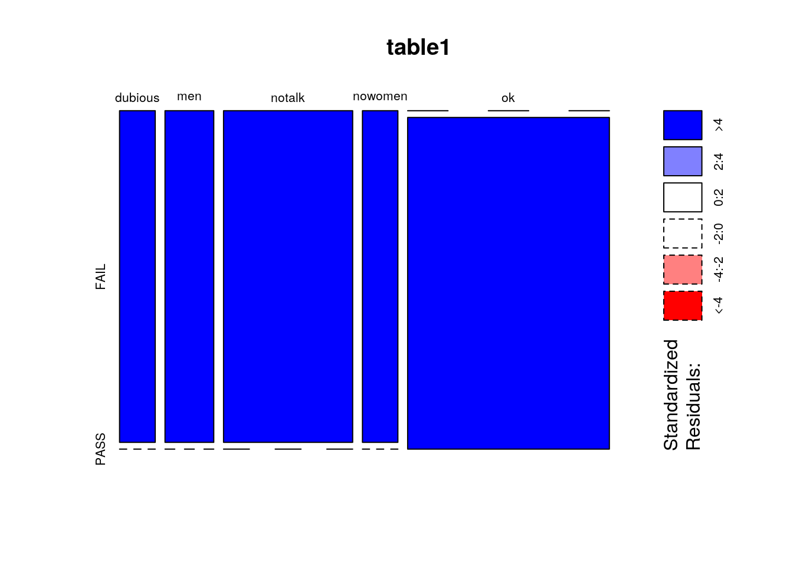
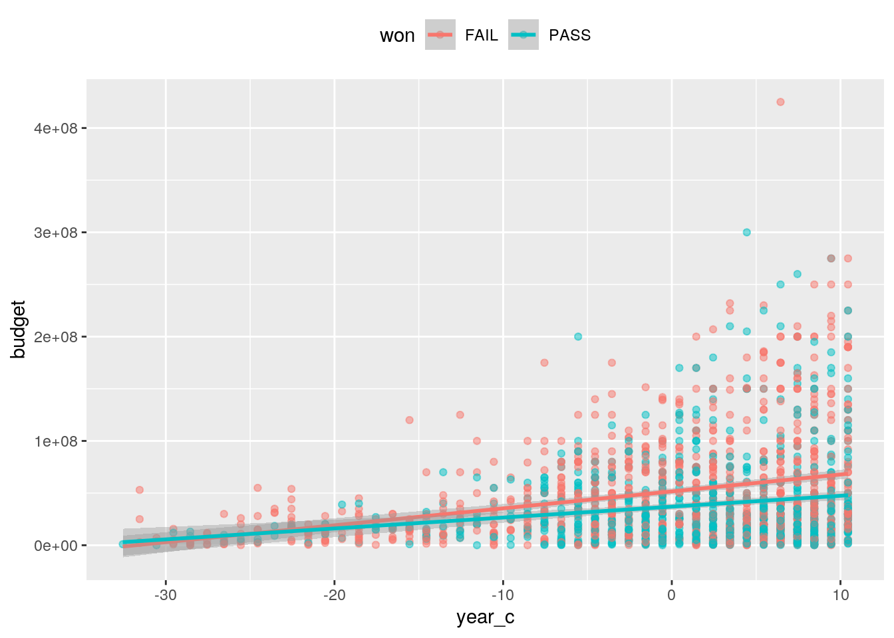
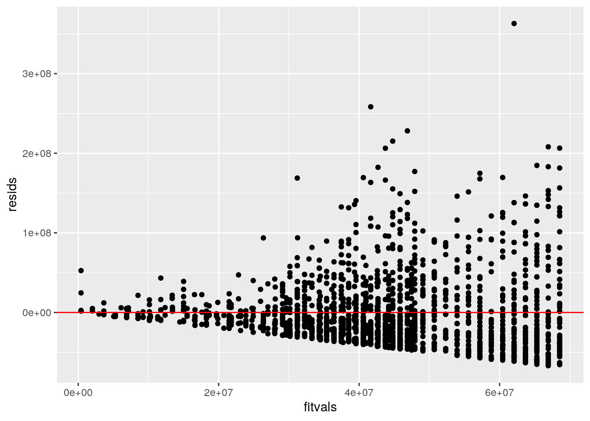
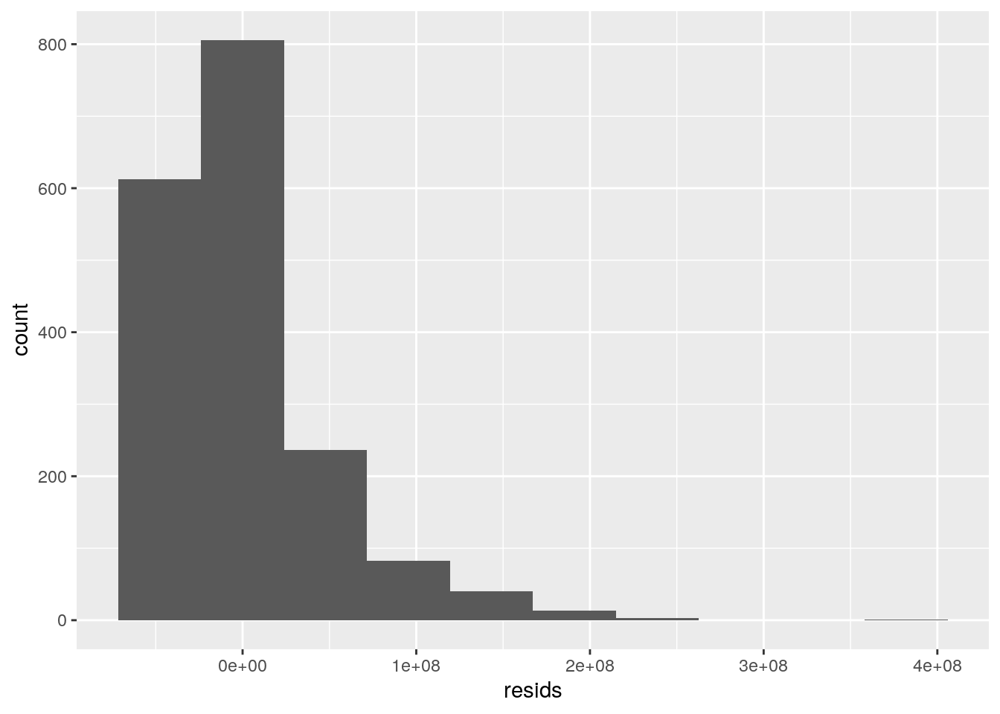
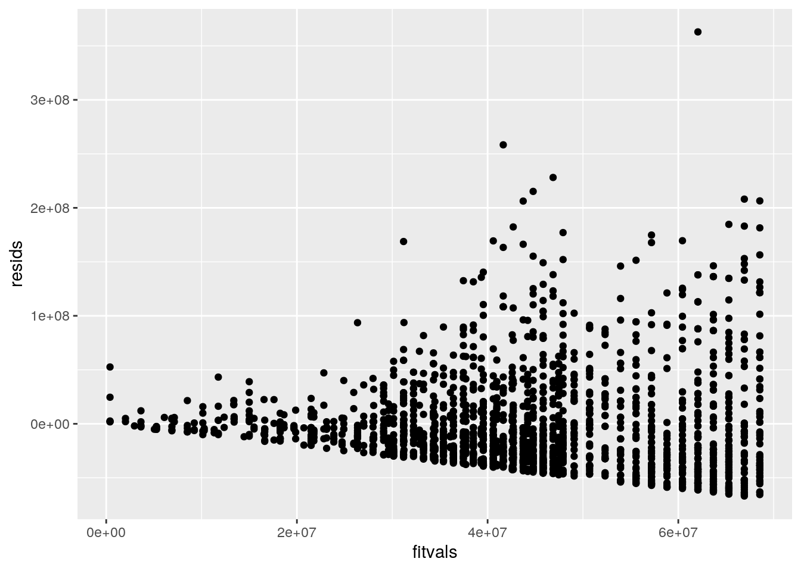
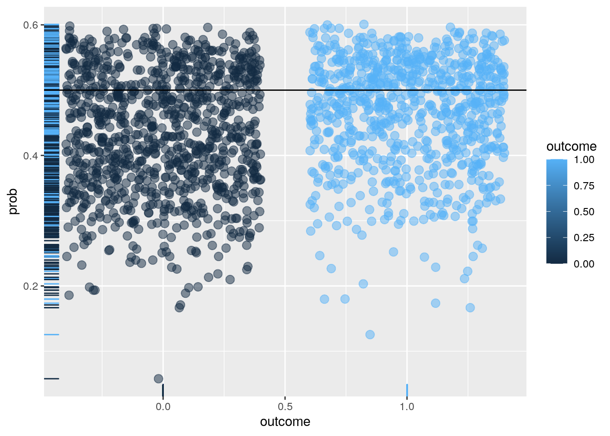
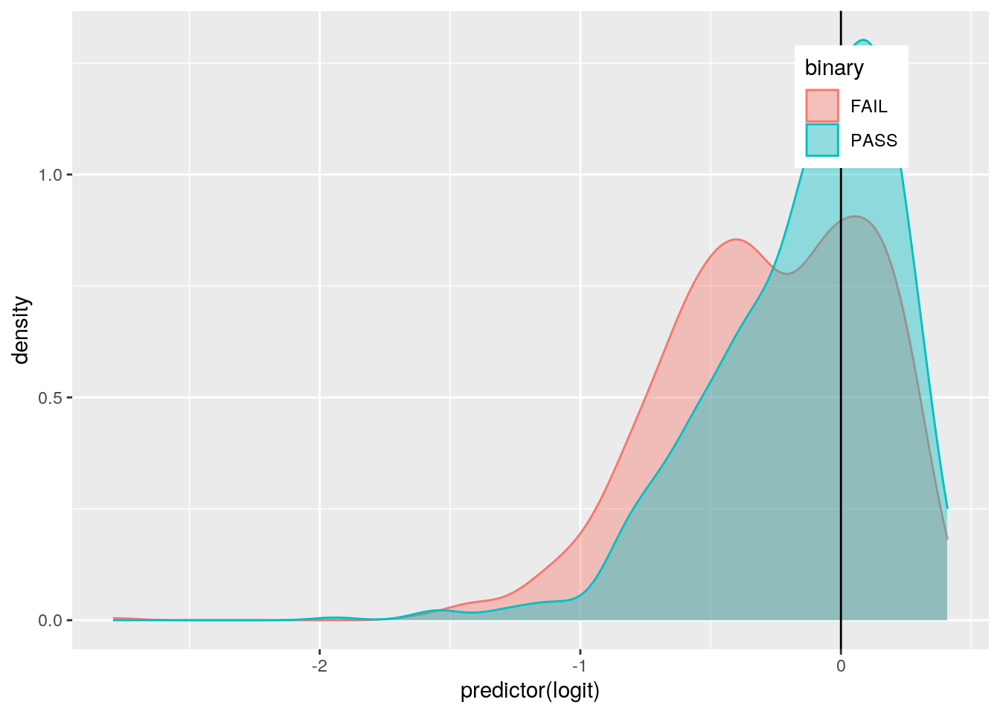
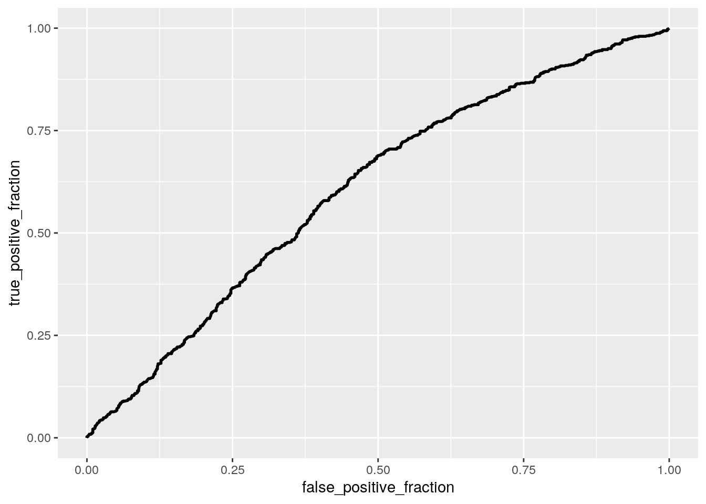

##Introduction For this project I am using the bechdel data from the fivethirtyeight. This data is about the Dollar-And-Cents Case Against Hollywood’s Exclusion of Women to see different information about the Hollywood movies that have a female actress who is the main character to see if woman are excluded from movies or not. Some of the most important factors of this data are the year, test (indicating the type of the test that they used), the budget of the movie, Binary which says that the movie passes the test or not.
library(tidyverse)## ── Attaching packages ─────────────────────────────────────── tidyverse 1.3.0 ──## ✓ ggplot2 3.3.3 ✓ purrr 0.3.4
## ✓ tibble 3.0.4 ✓ dplyr 1.0.2
## ✓ tidyr 1.1.2 ✓ stringr 1.4.0
## ✓ readr 1.4.0 ✓ forcats 0.5.0## ── Conflicts ────────────────────────────────────────── tidyverse_conflicts() ──
## x dplyr::filter() masks stats::filter()
## x dplyr::lag() masks stats::lag()library(dplyr)
library(ggplot2)
library(mvtnorm)
library(ggExtra)
library(ggridges)
library(rstatix)##
## Attaching package: 'rstatix'## The following object is masked from 'package:stats':
##
## filterlibrary(vegan)## Loading required package: permute## Loading required package: lattice## This is vegan 2.5-7library(fivethirtyeight)## Some larger datasets need to be installed separately, like senators and
## house_district_forecast. To install these, we recommend you install the
## fivethirtyeightdata package by running:
## install.packages('fivethirtyeightdata', repos =
## 'https://fivethirtyeightdata.github.io/drat/', type = 'source')write_csv(bechdel, "bc.csv")
getwd()## [1] "/stor/home/sk49523/website1/content/project"bc <- read_csv("bc.csv")##
## ── Column specification ────────────────────────────────────────────────────────
## cols(
## year = col_double(),
## imdb = col_character(),
## title = col_character(),
## test = col_character(),
## clean_test = col_character(),
## binary = col_character(),
## budget = col_double(),
## domgross = col_double(),
## intgross = col_double(),
## code = col_character(),
## budget_2013 = col_double(),
## domgross_2013 = col_double(),
## intgross_2013 = col_double(),
## period_code = col_double(),
## decade_code = col_double()
## )select<-dplyr::select
new<- bc %>% select(year, clean_test, budget, domgross, intgross, title) %>% group_by(clean_test) %>% arrange(desc(year))#assumption
group<- bc$clean_test
DVs<- bc %>% select(year, budget, domgross, intgross)
sapply(split(DVs, group),mshapiro_test)## dubious men notalk nowomen ok
## statistic 0.7840468 0.3913006 0.7605829 0.7302806 0.6321768
## p.value 3.873018e-13 4.155368e-25 1.456159e-26 1.132174e-14 4.595859e-38#MANOVA
man_1 <- manova(cbind(year, budget, domgross, intgross )~ clean_test, data= bc)
summary(man_1)## Df Pillai approx F num Df den Df Pr(>F)
## clean_test 4 0.039587 4.4281 16 7088 7.938e-09 ***
## Residuals 1772
## ---
## Signif. codes: 0 '***' 0.001 '**' 0.01 '*' 0.05 '.' 0.1 ' ' 1summary.aov(man_1)## Response year :
## Df Sum Sq Mean Sq F value Pr(>F)
## clean_test 4 1227 306.685 3.8477 0.004058 **
## Residuals 1772 141240 79.707
## ---
## Signif. codes: 0 '***' 0.001 '**' 0.01 '*' 0.05 '.' 0.1 ' ' 1
##
## Response budget :
## Df Sum Sq Mean Sq F value Pr(>F)
## clean_test 4 7.8943e+16 1.9736e+16 8.6095 7.019e-07 ***
## Residuals 1772 4.0620e+18 2.2923e+15
## ---
## Signif. codes: 0 '***' 0.001 '**' 0.01 '*' 0.05 '.' 0.1 ' ' 1
##
## Response domgross :
## Df Sum Sq Mean Sq F value Pr(>F)
## clean_test 4 1.0295e+17 2.5736e+16 4.0116 0.003042 **
## Residuals 1772 1.1368e+19 6.4154e+15
## ---
## Signif. codes: 0 '***' 0.001 '**' 0.01 '*' 0.05 '.' 0.1 ' ' 1
##
## Response intgross :
## Df Sum Sq Mean Sq F value Pr(>F)
## clean_test 4 6.2282e+17 1.5571e+17 3.5328 0.007035 **
## Residuals 1772 7.8100e+19 4.4074e+16
## ---
## Signif. codes: 0 '***' 0.001 '**' 0.01 '*' 0.05 '.' 0.1 ' ' 1
##
## 17 observations deleted due to missingnessbc %>% group_by(clean_test) %>% summarize(mean(year), mean(budget), mean(domgross),
mean(intgross))## `summarise()` ungrouping output (override with `.groups` argument)## # A tibble: 5 x 5
## clean_test `mean(year)` `mean(budget)` `mean(domgross)` `mean(intgross)`
## <chr> <dbl> <dbl> <dbl> <dbl>
## 1 dubious 2003. 49263380. NA NA
## 2 men 2002. 45127098. NA NA
## 3 notalk 2002. 53225573. NA NA
## 4 nowomen 2001. 48606738. NA NA
## 5 ok 2003. 37929168. NA NA#One-Way ANOVA
#the results tells us to reject the (null hypothesis) thefore all the means are not the same.
summary(aov(year~clean_test,data=bc))## Df Sum Sq Mean Sq F value Pr(>F)
## clean_test 4 1382 345.4 4.315 0.00178 **
## Residuals 1789 143198 80.0
## ---
## Signif. codes: 0 '***' 0.001 '**' 0.01 '*' 0.05 '.' 0.1 ' ' 1summary(aov(budget~clean_test,data=bc))## Df Sum Sq Mean Sq F value Pr(>F)
## clean_test 4 7.929e+16 1.982e+16 8.683 6.11e-07 ***
## Residuals 1789 4.084e+18 2.283e+15
## ---
## Signif. codes: 0 '***' 0.001 '**' 0.01 '*' 0.05 '.' 0.1 ' ' 1summary(aov(domgross~clean_test,data=bc))## Df Sum Sq Mean Sq F value Pr(>F)
## clean_test 4 1.029e+17 2.574e+16 4.012 0.00304 **
## Residuals 1772 1.137e+19 6.415e+15
## ---
## Signif. codes: 0 '***' 0.001 '**' 0.01 '*' 0.05 '.' 0.1 ' ' 1
## 17 observations deleted due to missingnesssummary(aov(intgross~clean_test,data=bc))## Df Sum Sq Mean Sq F value Pr(>F)
## clean_test 4 6.263e+17 1.566e+17 3.56 0.00671 **
## Residuals 1778 7.821e+19 4.399e+16
## ---
## Signif. codes: 0 '***' 0.001 '**' 0.01 '*' 0.05 '.' 0.1 ' ' 1
## 11 observations deleted due to missingness#post hoc t-test
pairwise.t.test(bc$year, bc$clean_test, p.adj = "none")##
## Pairwise comparisons using t tests with pooled SD
##
## data: bc$year and bc$clean_test
##
## dubious men notalk nowomen
## men 0.26349 - - -
## notalk 0.17405 0.94903 - -
## nowomen 0.12347 0.58972 0.56796 -
## ok 0.47928 0.01891 0.00063 0.00675
##
## P value adjustment method: nonepairwise.t.test(bc$budget, bc$clean_test, p.adj = "none")##
## Pairwise comparisons using t tests with pooled SD
##
## data: bc$budget and bc$clean_test
##
## dubious men notalk nowomen
## men 0.4332 - - -
## notalk 0.3818 0.0444 - -
## nowomen 0.9080 0.5106 0.3093 -
## ok 0.0092 0.0598 1.7e-08 0.0145
##
## P value adjustment method: nonepairwise.t.test(bc$domgross, bc$clean_test, p.adj = "none")##
## Pairwise comparisons using t tests with pooled SD
##
## data: bc$domgross and bc$clean_test
##
## dubious men notalk nowomen
## men 0.42799 - - -
## notalk 0.65977 0.12496 - -
## nowomen 0.30682 0.75755 0.08656 -
## ok 0.05383 0.27028 0.00012 0.55594
##
## P value adjustment method: nonepairwise.t.test(bc$intgross, bc$clean_test, p.adj = "none")##
## Pairwise comparisons using t tests with pooled SD
##
## data: bc$intgross and bc$clean_test
##
## dubious men notalk nowomen
## men 0.31993 - - -
## notalk 0.76206 0.09996 - -
## nowomen 0.36353 0.98864 0.15089 -
## ok 0.05579 0.42060 0.00033 0.47143
##
## P value adjustment method: nonefor checking the assumption I did multivariate normality for each group and the p value was so small so we can reject the null hypothesis and therefore the assumption of normality was not met.
#H0: The name of the test and whether they pass/ fail are related in the population.
#HA :The name of the test and whether they pass/ fail are not related in the population.
#Chi-Square test
library("MASS")##
## Attaching package: 'MASS'## The following object is masked _by_ '.GlobalEnv':
##
## select## The following object is masked from 'package:rstatix':
##
## select## The following object is masked from 'package:dplyr':
##
## selectdata.test <- data.frame(bc$clean_test, bc$binary)
data.test= table(bc$clean_test, bc$binary)
print(data.test)##
## FAIL PASS
## dubious 142 0
## men 194 0
## notalk 514 0
## nowomen 141 0
## ok 0 803print(chisq.test(data.test))##
## Pearson's Chi-squared test
##
## data: data.test
## X-squared = 1794, df = 4, p-value < 2.2e-16#Create a plot visualizing the null distribution and the test statistic ????????????????
#Mosaic Plot
table1 <- table(bc$clean_test, bc$binary)
mosaicplot(table1, shade=TRUE, legend=TRUE)## Warning: In mosaicplot.default(table1, shade = TRUE, legend = TRUE) :
## extra argument 'legend' will be disregarded
#ggplot(bc, aes(x=clean_test, fill=binary)+geom_bar(position = "stack")H0: The name of the test and whether they pass/ fail are related in the population. HA :The name of the test and whether they pass/ fail are not related in the population. I used Chi-Square test and Mosaic Plot for visualizing it.
##linear regression model
library(sandwich)
library(lmtest)## Loading required package: zoo##
## Attaching package: 'zoo'## The following objects are masked from 'package:base':
##
## as.Date, as.Date.numericbc$year_c <- bc$year-mean(bc$year)
bc$domgross_c <- bc$domgross-mean(bc$domgross)
bc$budget_c <- bc$budget-mean(bc$budget)
fit1<-lm(budget~binary*year_c, data=bc)
coef(fit1)## (Intercept) binaryPASS year_c binaryPASS:year_c
## 51594866.9 -14603571.9 1622599.0 -577227.1summary(fit1)##
## Call:
## lm(formula = budget ~ binary * year_c, data = bc)
##
## Residuals:
## Min 1Q Median 3Q Max
## -66864539 -30268463 -10609645 17099816 362943258
##
## Coefficients:
## Estimate Std. Error t value Pr(>|t|)
## (Intercept) 51594867 1465949 35.196 < 2e-16 ***
## binaryPASS -14603572 2195839 -6.651 3.87e-11 ***
## year_c 1622599 149413 10.860 < 2e-16 ***
## binaryPASS:year_c -577227 256829 -2.248 0.0247 *
## ---
## Signif. codes: 0 '***' 0.001 '**' 0.01 '*' 0.05 '.' 0.1 ' ' 1
##
## Residual standard error: 46020000 on 1790 degrees of freedom
## Multiple R-squared: 0.08935, Adjusted R-squared: 0.08782
## F-statistic: 58.54 on 3 and 1790 DF, p-value: < 2.2e-16xo <- bc %>% mutate(won=recode(binary, '0'='PASS','1'='FAIL'))
ggplot(xo, aes(year_c, budget , group=won))+geom_point(aes(color=won),alpha=.5)+geom_smooth(method="lm", fullrange=T, aes(color=won))+theme(legend.position = "top")## `geom_smooth()` using formula 'y ~ x'
SST<- sum((bc$budget-mean(bc$budget))^2)
SSR<- sum((fit1$fitted.values-mean(bc$budget))^2)
SSE<- sum(fit1$residuals^2)
# The proportion of the variation in the outcome does your model explain is 0.08678056.
SSR/SST ## [1] 0.08935039#Assumptions (linearity, homoskedsaticity)
resids<-fit1$residuals
fitvals<-fit1$fitted.values
ggplot()+geom_point(aes(fitvals,resids))+geom_hline(yintercept=0, color='red')
ggplot()+geom_histogram(aes(resids),bins=10)
ggplot()+geom_point(aes(fitvals,resids))
#normality test
shapiro.test(resids)##
## Shapiro-Wilk normality test
##
## data: resids
## W = 0.8559, p-value < 2.2e-16#recompute regression results with robust standard errors
fit2<-lm(budget~binary*year, data=bc)
coeftest(fit2)##
## t test of coefficients:
##
## Estimate Std. Error t value Pr(>|t|)
## (Intercept) -3197744727 299103108 -10.6911 < 2e-16 ***
## binaryPASS 1141324030 514406611 2.2187 0.02663 *
## year 1622599 149413 10.8598 < 2e-16 ***
## binaryPASS:year -577227 256829 -2.2475 0.02473 *
## ---
## Signif. codes: 0 '***' 0.001 '**' 0.01 '*' 0.05 '.' 0.1 ' ' 1coeftest(fit2, vcov=vcovHC(fit1))[,1:2]## Estimate Std. Error
## (Intercept) -3197744727 1623864
## binaryPASS 1141324030 2147761Above I did the linear regression model from the variables year and binary for the response variable of budget.The proportion of the variation in the outcome does your model explain is 0.08678056. From recompute regression results with robust standard errors I got the intercept of 51594867 which is very similar to the orginal results of the linear regression model which gave a intercept of 51594866.9.
##regression model (with the interaction),compute bootstrapped standard errors
#Bootstrap residuals instead
fit<-lm(budget~binary*year_c, data=bc)
resids<-fit$residuals
fitted<-fit$fitted.values
resid_resamp<-replicate(5000,{
new_resids<-sample(resids,replace=TRUE)
newdat<-bc
newdat$new_y<-fitted+new_resids
fit<-lm(new_y ~ binary*year_c, data = newdat)
coef(fit)
})
#normal SEs
coeftest(fit)##
## t test of coefficients:
##
## Estimate Std. Error t value Pr(>|t|)
## (Intercept) 51594867 1465949 35.1955 < 2.2e-16 ***
## binaryPASS -14603572 2195839 -6.6506 3.867e-11 ***
## year_c 1622599 149413 10.8598 < 2.2e-16 ***
## binaryPASS:year_c -577227 256829 -2.2475 0.02473 *
## ---
## Signif. codes: 0 '***' 0.001 '**' 0.01 '*' 0.05 '.' 0.1 ' ' 1## Estimated SEs
resid_resamp%>%t%>%as.data.frame%>%summarize_all(sd)## (Intercept) binaryPASS year_c binaryPASS:year_c
## 1 1455966 2212967 150677.3 254082.3## Empirical 95% CI
resid_resamp%>%t%>%as.data.frame%>%gather%>%group_by(key)%>%
summarize(lower=quantile(value,.025), upper=quantile(value,.975))## `summarise()` ungrouping output (override with `.groups` argument)## # A tibble: 4 x 3
## key lower upper
## <chr> <dbl> <dbl>
## 1 (Intercept) 48845757. 54474435.
## 2 binaryPASS -19001364. -10344773.
## 3 binaryPASS:year_c -1084550. -78760.
## 4 year_c 1313933. 1910275.for the Estimated SEs by computing bootstrapped standard errors resulted in Intercept of 1462936 , and the normal SEs is 51594867. These two numbers are very close to each other.
##logistic regression model from two variables
library(tidyverse)
library(lmtest)
data<-bc%>%mutate(outcome=ifelse(binary=="PASS",1,0))
head(data)## # A tibble: 6 x 19
## year imdb title test clean_test binary budget domgross intgross code
## <dbl> <chr> <chr> <chr> <chr> <chr> <dbl> <dbl> <dbl> <chr>
## 1 2013 tt17… 21 &… nota… notalk FAIL 1.30e7 25682380 4.22e7 2013…
## 2 2012 tt13… Dred… ok-d… ok PASS 4.50e7 13414714 4.09e7 2012…
## 3 2013 tt20… 12 Y… nota… notalk FAIL 2.00e7 53107035 1.59e8 2013…
## 4 2013 tt12… 2 Gu… nota… notalk FAIL 6.10e7 75612460 1.32e8 2013…
## 5 2013 tt04… 42 men men FAIL 4.00e7 95020213 9.50e7 2013…
## 6 2013 tt13… 47 R… men men FAIL 2.25e8 38362475 1.46e8 2013…
## # … with 9 more variables: budget_2013 <dbl>, domgross_2013 <dbl>,
## # intgross_2013 <dbl>, period_code <dbl>, decade_code <dbl>, year_c <dbl>,
## # domgross_c <dbl>, budget_c <dbl>, outcome <dbl>fit2<-glm(outcome~budget+year, family="binomial", data=data)
summary(fit2)##
## Call:
## glm(formula = outcome ~ budget + year, family = "binomial", data = data)
##
## Deviance Residuals:
## Min 1Q Median 3Q Max
## -1.3503 -1.0961 -0.8551 1.1840 2.0375
##
## Coefficients:
## Estimate Std. Error z value Pr(>|z|)
## (Intercept) -6.025e+01 1.133e+01 -5.316 1.06e-07 ***
## budget -7.268e-09 1.127e-09 -6.448 1.13e-10 ***
## year 3.014e-02 5.665e-03 5.320 1.04e-07 ***
## ---
## Signif. codes: 0 '***' 0.001 '**' 0.01 '*' 0.05 '.' 0.1 ' ' 1
##
## (Dispersion parameter for binomial family taken to be 1)
##
## Null deviance: 2467.3 on 1793 degrees of freedom
## Residual deviance: 2406.9 on 1791 degrees of freedom
## AIC: 2412.9
##
## Number of Fisher Scoring iterations: 4coeftest(fit2)##
## z test of coefficients:
##
## Estimate Std. Error z value Pr(>|z|)
## (Intercept) -6.0249e+01 1.1334e+01 -5.3159 1.061e-07 ***
## budget -7.2675e-09 1.1271e-09 -6.4479 1.134e-10 ***
## year 3.0138e-02 5.6648e-03 5.3202 1.036e-07 ***
## ---
## Signif. codes: 0 '***' 0.001 '**' 0.01 '*' 0.05 '.' 0.1 ' ' 1exp(coef(fit2))## (Intercept) budget year
## 6.828274e-27 1.000000e+00 1.030597e+00#confusion matrix
probs<- predict(fit2, type="response")
table(predict=as.numeric(probs>.5),truth=data$outcome)%>% addmargins## truth
## predict 0 1 Sum
## 0 707 474 1181
## 1 284 329 613
## Sum 991 803 1794#accuracy
( 707+329)/1794## [1] 0.5774805#Sensitivity (TPR)
707/1181 ## [1] 0.5986452#Specificity (TNR)
329 /613## [1] 0.5367047#Precision (PPV)
707/991## [1] 0.7134208data$prob<- predict(fit2, type="response")
ggplot(data,aes(outcome,prob))+geom_jitter(aes(color=outcome), alpha=.5,size=3)+geom_rug(aes(color=outcome),slides="right")+geom_hline(yintercept = .5)## Warning: Ignoring unknown parameters: slides
table(predict=as.numeric(data$prob>.5),truth=data$outcome)%>%addmargins## truth
## predict 0 1 Sum
## 0 707 474 1181
## 1 284 329 613
## Sum 991 803 1794#sensitivity
mean(data[data$outcome==1,]$prob>.1)## [1] 1#specificity
mean(data[data$outcome==0,]$prob<.1)## [1] 0.001009082#density plot, we have a perfect separation and no overlap between the two red and blue ones.
data$logit<- predict(fit2, type="link")
data %>% ggplot(aes(logit,color=binary, fill=binary))+geom_density(alpha=.4)+theme(legend.position = c(.85,.85))+geom_vline(xintercept = 0)+xlab("predictor(logit)")
#Generate an ROC curve (plot) and calculate AUC
new3<- bc %>% mutate_at(c("clean_test"), as.factor)
library(plotROC)
ROCplot <- ggplot(data)+geom_roc(aes(d=outcome, m=prob), n.cuts=0)
ROCplot
#calculated AUC is 0.6055414
calc_auc(ROCplot)## PANEL group AUC
## 1 1 -1 0.6055414The estimate column is the log odd coefficient and none of them are significant. Negative numbers mean the more the log of the odds decrease as we increase the number of test , probability goes down(for instance for intercept , budget are both negative numbers).none of them are significant so they do not have a huge impact on the response variable.For the density plot, we do not have a perfect separation and there is lot of overlap between the two red and blue ones.calculated AUC is 0.6055414. accuracy is 0.5774805, sensivity is 0.5986452, specifity is 0.5367047.
class_diag<-function(probs,truth){
tab<-table(factor(probs>.5,levels=c("FALSE","TRUE")),truth)
acc=sum(diag(tab))/sum(tab)
sens=tab[2,2]/colSums(tab)[2]
spec=tab[1,1]/colSums(tab)[1]
ppv=tab[2,2]/rowSums(tab)[2]
if(is.numeric(truth)==FALSE & is.logical(truth)==FALSE) truth<-as.numeric(truth)-1
#CALCULATE EXACT AUC
ord<-order(probs, decreasing=TRUE)
probs <- probs[ord]; truth <- truth[ord]
TPR=cumsum(truth)/max(1,sum(truth))
FPR=cumsum(!truth)/max(1,sum(!truth))
dup<-c(probs[-1]>=probs[-length(probs)], FALSE)
TPR<-c(0,TPR[!dup],1); FPR<-c(0,FPR[!dup],1)
n <- length(TPR)
auc<- sum( ((TPR[-1]+TPR[-n])/2) * (FPR[-1]-FPR[-n]) )
data.frame(acc,sens,spec,ppv,auc)
}##logistic regression model from all variables
library(dbplyr)##
## Attaching package: 'dbplyr'## The following objects are masked from 'package:dplyr':
##
## ident, sqldata<- bc %>% mutate(outcome=ifelse(binary=="PASS",1,0))
data5<- data %>% dplyr::select(-imdb, -title, -test, -clean_test, -code, -binary, -period_code, -decade_code, -domgross_c) %>% na.omit()
glimpse(data5)## Rows: 1,776
## Columns: 10
## $ year <dbl> 2013, 2012, 2013, 2013, 2013, 2013, 2013, 2013, 2013, 2…
## $ budget <dbl> 1.30e+07, 4.50e+07, 2.00e+07, 6.10e+07, 4.00e+07, 2.25e…
## $ domgross <dbl> 25682380, 13414714, 53107035, 75612460, 95020213, 38362…
## $ intgross <dbl> 42195766, 40868994, 158607035, 132493015, 95020213, 145…
## $ budget_2013 <dbl> 13000000, 45658735, 20000000, 61000000, 40000000, 22500…
## $ domgross_2013 <dbl> 25682380, 13611086, 53107035, 75612460, 95020213, 38362…
## $ intgross_2013 <dbl> 42195766, 41467257, 158607035, 132493015, 95020213, 145…
## $ year_c <dbl> 10.447603, 9.447603, 10.447603, 10.447603, 10.447603, 1…
## $ budget_c <dbl> -31826462.6, 173537.4, -24826462.6, 16173537.4, -482646…
## $ outcome <dbl> 0, 1, 0, 0, 0, 0, 0, 1, 1, 0, 1, 1, 1, 1, 0, 1, 0, 1, 0…fit5<- glm(outcome~., data=data5, family="binomial")
prob2 <- predict(fit5,type="response")
class_diag(prob2, data5$outcome) ## acc sens spec ppv auc
## 1 0.588964 0.4861461 0.6720978 0.5451977 0.6215275set.seed(1234)
k=10
data<- data5 [sample(nrow(data5)),]
folds<- cut(seq(1:nrow(data5)), breaks=k, labels=F)
diags<- NULL
for(i in 1:k){
train<- data5[folds!=i,]
test<- data5[folds!=i,]
truth<- test$outcome
fit6<- glm(outcome~., data=train, family="binomial")
probs<- predict(fit6, newdata=test, type="response")
diags<- rbind(diags, class_diag(probs,truth))
}## Warning in predict.lm(object, newdata, se.fit, scale = 1, type = if (type == :
## prediction from a rank-deficient fit may be misleading
## Warning in predict.lm(object, newdata, se.fit, scale = 1, type = if (type == :
## prediction from a rank-deficient fit may be misleading
## Warning in predict.lm(object, newdata, se.fit, scale = 1, type = if (type == :
## prediction from a rank-deficient fit may be misleading
## Warning in predict.lm(object, newdata, se.fit, scale = 1, type = if (type == :
## prediction from a rank-deficient fit may be misleading
## Warning in predict.lm(object, newdata, se.fit, scale = 1, type = if (type == :
## prediction from a rank-deficient fit may be misleading
## Warning in predict.lm(object, newdata, se.fit, scale = 1, type = if (type == :
## prediction from a rank-deficient fit may be misleading
## Warning in predict.lm(object, newdata, se.fit, scale = 1, type = if (type == :
## prediction from a rank-deficient fit may be misleading
## Warning in predict.lm(object, newdata, se.fit, scale = 1, type = if (type == :
## prediction from a rank-deficient fit may be misleading
## Warning in predict.lm(object, newdata, se.fit, scale = 1, type = if (type == :
## prediction from a rank-deficient fit may be misleading
## Warning in predict.lm(object, newdata, se.fit, scale = 1, type = if (type == :
## prediction from a rank-deficient fit may be misleadingsummarize_all(diags, mean)## acc sens spec ppv auc
## 1 0.5911533 0.4865884 0.6749055 0.54787 0.6218954library(glmnet)## Loading required package: Matrix##
## Attaching package: 'Matrix'## The following objects are masked from 'package:tidyr':
##
## expand, pack, unpack## Loaded glmnet 4.0-2set.seed(1234)
y<- as.matrix(data$outcome)
x<- model.matrix(outcome~.,data=data)[,-1]
head(x); x<-scale(x)## year budget domgross intgross budget_2013 domgross_2013 intgross_2013
## 1 1999 80000000 91188905 180188905 111876962 127524221 251987342
## 2 2003 55000000 70098138 180098138 69634783 88750338 228019903
## 3 2002 4000000 6525762 11799060 5180717 8452031 15281897
## 4 2003 68000000 33685268 75685268 86093913 42648478 95824131
## 5 2008 20000000 3531756 5531756 21645126 3822265 5986778
## 6 2005 1125000 16124543 18673274 1342162 19237114 22277835
## year_c budget_c
## 1 -3.5523969 35173537
## 2 0.4476031 10173537
## 3 -0.5523969 -40826463
## 4 0.4476031 23173537
## 5 5.4476031 -24826463
## 6 2.4476031 -43701463cv<- cv.glmnet(x,y,family="binomial")
lasso <- glmnet(x,y,family="binomial", lambda=cv$lambda.1se)
coef(lasso)## 10 x 1 sparse Matrix of class "dgCMatrix"
## s0
## (Intercept) -0.216921656
## year 0.090572418
## budget .
## domgross .
## intgross .
## budget_2013 -0.228201733
## domgross_2013 -0.005013170
## intgross_2013 .
## year_c 0.008766944
## budget_c .#Perform 10-fold CV using only the variables lasso selected
data5$year2013<-ifelse(data5$year=="2013",1,0)
data7<-data5[sample(nrow(data5)),] #randomly order rows
folds<-cut(seq(1:nrow(data5)),breaks=k,labels=F) #create folds
diags<-NULL
for(i in 1:k){
train<-data7[folds!=i,]
test<-data7[folds==i,]
truth<-test$outcome
fit<-glm(outcome~domgross+budget_2013+year2013,data=train,family="binomial")
probs<-predict(fit,newdata = test,type="response")
diags<-rbind(diags,class_diag(probs,truth))
}
diags%>%summarize_all(mean)## acc sens spec ppv auc
## 1 0.5580556 0.3207698 0.7522714 0.511266 0.5801314according to the results of the lasso it can be said that the budget_2013,year_c, domgross_2013, year are the most predictable variables.From all the variable I got auc 0.6218954 but when Perform 10-fold CV using only the variables lasso selected I got auc 0.5801314 which are very similar with each other.